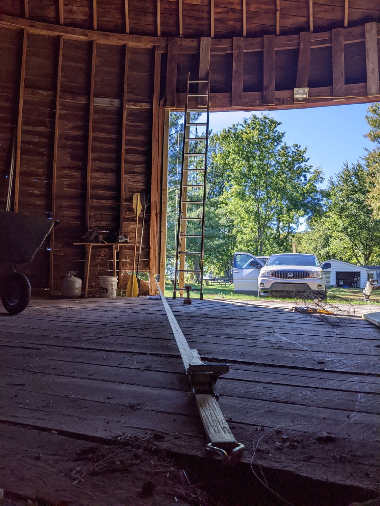

home | previous post | next post
We've been on "the farm" for nine-ish months now. Several of the many projects we've undertaken since moving in have involved doing our best to make sure the 100+ year old barn doesn't fall down.
The thing is, the barn is sort of a strange structure. It was built around 1910, which was apparently a strange time for barns. The formerly endless seeming forests were largely gone, so building a typical post and beam structure out of hundreds of eight or twelve inch thick old growth hardwood beams was growing more challenging. From what I can tell, over the next few decades, the gothic arch barn would become the typical solution to this problem, but for whatever reason this farmer opted for a more unique solution: the round barn, more specifically a "true circular" barn.
It looks pretty good considering it's more than a hundred years old, but has some issues we're working through.
When we moved in, the floor inside was very uneven. Over the past 100 years, the posts in the basement have been slowly rotting into the ground so most of the supports were sitting roughly six inches below where they should.

This all meant the first project was to lift all of those supports back to where they should be. After a few abortive attempts involving a big screw jack and various breaker bars, I bought/borrowed a few hydraulic jacks and went to work (it turns out barns are heavy!)
Here's an example of the results. As you can see, there's about six inches of shims/dunnage sitting on top of the original post to get that beam to where it should be.
Obviously giant stacks of shims aren't a great long term solution, so I'm slowly replacing the rotting original posts with telephone poles like this.
Now that the floor is relatively level, we were able to patch up one of the more conspicuous issues - the giant hole in the doorway. Unfortunately I don't seem to have any pictures of before, but here we are mid repair. Replacement ends for the floor joists sistered in, along with the beginning of new decking going on.

Part of this project also included adding some additional support to the ends of the doorway's curved header as the studs along the sides of the door were starting to rot off at the bottom making everything shift. I jacked up the header, then used a giant ratchet strap to pull the bottom of the original studs back to where they should be before lag bolting 12' 4x4's to their sides to keep everything together.
Here's the final result. The new 4x4's you can see along the sides are secured to the original studs with 8" lag bolts.
The last big project we were able to finish just as the snow started was getting doors installed. Apparently the old ones blew off in a storm years ago, so we wanted to make sure things were sealed up for the winter so all of our new wood wasn't getting soaked all over again.
I'm not totally happy with how these came out. Building flat doors for a curved structure is trickey. I have some ideas for how they could be improved in future, but they're up for now and doing their job!
-g